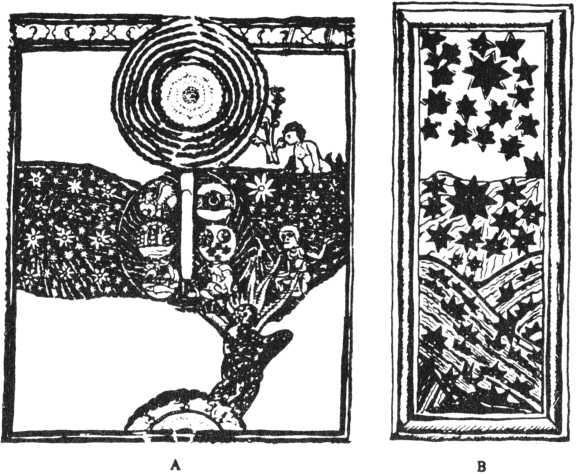
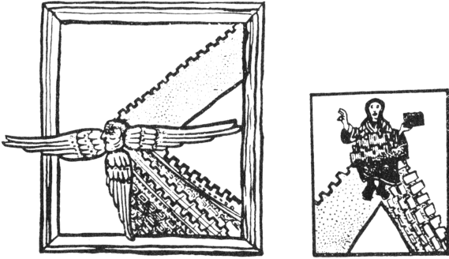

'Cennet Şehri'nin Görüntüsü.' 1180'de Bingen'de yazılmış Hildegard'ın Scivias'ından bir elyazması. Bu şekil migren nöbeti sırasında ortaya çıkan birkaç imgenin bir araya getirilmiş halidir.
Her devrin dini literatürü, parlayan bir ışığın eşlik ettiği, tarifi mümkün olmayan mükemmel duyguların anlatımlarıyla doludur. William James bu konuya dair "fotizm"den (photism) bahseder.

Hildegard'ın hayallerinde görülen, geçirdiği migren halüsinasyonlarından çıkan çeşitlemelerdir. Şekil A'da arka planda parlayan yıldızlar vardır ve bu yıldızlar titrek çizgilerin üzerindedir. Şekil B'deki parlak yıldızlar (ç.n. Göz kapağı kapalıyken retinanın mekanik olarak uyarılmasıyla ortaya çıkan ışıklı yıldızlar) belli bir yeri aşarken gözden kaybolurlar. Pozitif ve negatif skotomaların (görme alanı içindeki kör noktaların) oluşmasına dair bir şekil olsa gerek... Hildegard, şekil C ve D'de tipik olarak migrene ait bir tema seçmektedir. Bu şekillerdeki benzerlik, bir noktadan başlayarak giderek genişlemeleridir. Bunların asılları çok parlak ışıklı ve renklidir.
Vakaların büyük çoğunluğunda yaşantının histerik veya psikotik bir doyum mu, yoksa entoksikasyon belirtileri veya epilepsi, migren belirtileri mi olduğunu tahmin edemiyoruz. Bingen'li Hildegard'ın (1098-1180) durumu çok ayrıcalıklı ve kendine hastır. Bir rahibe ve inançlı bir insan olan Hildegard sıradışı bir zekâya ve edebi bir güce sahipti. Çocukluk yıllarından başlayarak ölümüne kadar sayısız hayaller gördü ve Scivias ile Liber Divinorum Operum (İlahi Çalışmalar Kitabı) adlı iki eserinde bu hayallerinin resimleri ve onlarla ilgili hikâyeler yer alır. Bu hikâyeler ve resimler dikkatle incelendiğinde bunların nasıl oluştuğuyla ilgili cevaplar hiç şüpheye yer bırakmayacak şekilde ortaya çıkar; bunlar hiç şüphesiz migren kökenli hayallerdir ve daha önceden anlatılan görsel aura çeşitlerindendir. Singer 1958 senesinde Hildegard'ın hayalleri üzerine yazdığı geniş makalesinde aşağıda anlatılacak olayı bu durumun en önemli özelliği olarak göstermiştir;
Hepsinde tek bir noktadan veya birkaç nokta grubundan yayılan ışık parlıyor ve hareket ediyor, genelde bu hareket, dalgalanma şeklinde oluyor. Bunlar çoğunlukla yıldızlar veya parlayan gözler olarak yorumlanmışlardır. (Şekil B) Epeyce vakada da tek bir ışık, diğerlerinden daha büyüktür ve dalga dalga yayılır (Şekil A); bu figürlerde sıklıkla gördüğüm şey güçlü ve belirgin şekillerin renkli bir bölgeden yayıldığıdır. (Şekil C ve D) Böylesi hayalleri görme yeteneği olanların çizdikleri şekillerde görüldüğü üzere sıklıkla parlayan ışıklar onların ateşli bir durumda, bir heyecan ve uyarılma halinde olduklarını göstermektedir.
Hildegard şöyle yazar:
"Hayalleri gördüğümde ne uyuyordum, ne rüya görüyordum. Deli de değilim. Bu hayalleri ne dünyevi bir gözle gördüm, ne de bedenimdeki kulaklarımla algıladım. Gizli bir köşede de değildim. Bilakis, çok canlı ve uyanık bir haldeydim. Bu hayalleri, ruhumun gözleri ve kulaklarıyla algıladım. Bunları Allah'ın isteği üzerine açık bir şekilde gördüm."
Şekil B'de görülen yıldızların düşerek okyanusta kaybolmalarının, meleklerin düşüşüne işaret ettiğini söylüyor.
"Çok güzel ve parlak bir yıldız gördüm. Bu büyük yıldızla birlikte bir sürü küçük yıldız da güneye doğru kayıyordu. Aniden bunlar yok oldular ve her biri birer kömür tanesine dönüştü. Sonra da artık onları göremeyeyim diye bir uçuruma yuvarlandılar."
Bu Hildegard'ın simgesel anlatımıdır. Bizim kelime anlamıyla yapacağımız yorum, onun kendi görsel alanı içinde bir yıldız yağmuruna şahit olduğu ve bu yıldız yağmurunun negatif skotoma ile tamamlandığıdır. Şekil C’nin yer aldığı Zelus Dei'de ve Şekil D'nin yer aldığı Sedens Lucidus'ta siperane figürlerin yer aldığı hayalleri, ışıklı ve renkli bir merkezden yayılıyordu. Bu iki görüntü birleşerek ilk resimdeki görüntüyü oluşturmuştu. Hildegard da bunu Tanrı'nın şehrinin aedificium'u olarak yorumlamıştır.
Bu yaşantıların büyük bir esrime (vecd) ile gerçekleşmesi, etkilerini daha da kalıcı hale getiriyordu. Nadiren daha ilk parlaklık kaybolmadan ikinci skotoma da geldiğinden durum daha da etkileyici bir hal alıyordu;
"Gördüğüm ışık sabit değil. Güneşten parlak, ama ne yüksekliğini, ne enini, ne de derinliğini ölçebiliyorum. Sadece ona 'yaşayan ışık bulutu' diyorum. Güneşin, ajan, yıldızların suda yansıdığı gibi, yazılar, deyişler, kısaca insanın tüm çalışmaları ve meziyetleri gözlerimin önünde bu bulutun içinde yansıyor... Bazen bu büyük ışığın içinde başka bir ışık daha görüyorum. Buna da 'yaşayan ışığın özü' diyorum. Ona baktığımda tüm mutsuzluğum ve ağrılarım hafızamdan siliniyor. Böylece yeniden eskisi gibi bir genç kız oluyorum, yaşlı bir kadın değil."
Bu kendinden geçme duygusu ve ciddi bir teoforus (theophorus) ile gelen, felsefi bir anlam içinde yanıp tutuşan Hildegard'ın bu hayalleri hayatını mistisizme ve ulviyete adamasına sebep olmuştur.
Bu hayaller pek çok insana anlamsız ve sıradan gelebilecek fizyolojik bir olayın, ayrıcalıklı bir bilinç düzeyinde olan bir kişi için, vecd dolu bir ilham kaynağı olabileceğine dair kendine özgü bir örnek teşkil ederler. Ara sıra epileptik auralar yaşayan Dostoyevski bunlara uygun tarihi paralellikler bulur ve bunlara önemli anlamlar atfeder;
"Sadece 'an'lar vardır ve bu anlar sonsuz uyumu hissedebildiğiniz beş altı saniyelik zaman dilimleridir... Bu anların yaşattığı en kötü şey ise, ürkütücü bir berraklık ve esrime duygusudur. Eğer bu durum beş saniyeden fazla sürerse ruh buna katlanamaz ve uçup gider. Bu beş saniye içinde tüm varlığımı bütünüyle yaşar, gerekirse bunun için hayatımı bile veririm. Üstüne üstlük büyük bir bedel de ödemiş olduğumu düşünmeden..."